[1] 2 6 2 4 2 3 4 2 2 6 3 2 6 5 3 2 1 1 3 6Methods for Research and Policy Evaluation
Session 1
Paul Servais
Introduction
Your instructor
- Paul Servais, paul.servais@sciencespo.fr.
- Trained as physical engineer (Ecole Polytechnique de Bruxelles), then came to SciencesPo (Urban School), graduated last year
- Now working on climate politics, comparative politics
- I’ve been working on the electoral impacts of wind turbines on the vote for the RN
Course objectives
- Provide you with skills useful for:
- Policy Evaluation
- Quantitative research
- With mathematical formalisation
- Based on coding in R (on RStudio), with some Stata examples
- Correlation is not causation !
Course organisation
- 10’ introduction
- 30’ mathematical formalisation and coding examples
- 1h maths and coding exercices on R
And you ?
- Background ?
- math, statistics, coding
- Objectives for the class ?
Course material
- Everything on https://paulservais-1.github.io/methods_policyevaluation/
- More structured than Moodle
- Sessions, with clear codings outputs
- Exercices
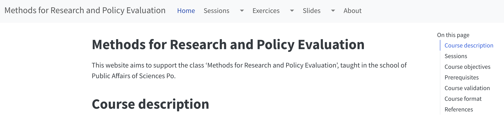
AI
R and RStudio
- Did you manage to install it ?
- open-source
- wide community
- free
Course evaluation
- Simple pass/fail
- Replicate or find a research question, by groups of two, and write a 5-pages document summarising the findings
- Abstract
- Intro - Theory - Methods - Results - Conclusion
- The objective is clearly not to overload anybody with work, but to give useful tips and skills for the future !
Examples paper
Sessions
- Coding basics, and descriptive statistics
- Linear regressions
- Non-linear regressions
- Regression Discontinuity Design (RDD)
- Regression Discontinuity Design (RDD)
- Difference-in-differences (DiD) and panel data
- Instrumental Variables (IV)
Other excellent sources
- Work by colleagues of my center (CEE) :
- Work by other economists :
- Cunningham, Scott. Causal Inference: The Mixtape. (2021). Available at: https://mixtape.scunning.com/.
- Huntington-Klein. The Effect: An Introduction to Research Design and Causality. (2021). https://theeffectbook.net/
- https://scpoecon.github.io/ScPoEconometrics/R-intro.html
- Cunningham, Scott. Causal Inference: The Mixtape. (2021). Available at: https://mixtape.scunning.com/.
Questions ?
Coding basics
Motivation
- Our world is increasingly measured and monitored systematically
- This creates loads of data about almost everything
- The objectives of statistics is to find meaningful information in those data
- Yet most of the time the data is imperfect or limited, in terms of reach, validity, and in terms of reliability
- Need to idenfity margins of validity !
Research problem and empirical evidence
- A research puzzle generally comes with identifying a puzzling relationship between two variables
- Why Y despite X ? Because Z
- A more empirical question would also be: does Z affect Y ?
- Quantitative methods, and causal inference, are a way to assess the size of the effect of Z on Y and to measure its significance.
Descriptive statistics
Descriptive statistics
- The first step in every statistical analysis
- Describe the variables we work with
- remove outliers, deal with missing values
- verify the quality of the data
- range
- mean
- median
- standard deviation
- density
Structure
- Intuitive examples
- Examples with dices
- Definitions : mean, variance, median, deciles
- Real-life application
Random variables
- A variable with random outcomes, is called a random variable : eg. a census is generally built on a sample of individuals, randomly drawn from an overall population.
- Categorical : finite amount of values/categories
- Nominal : non-ordered eg. gender, the department where you live
- Ordinal : ranking of preferences eg. ranking your preferences from 1 to 5
- Continuous/interval variables : infinite number of potential outcomes (in a given range)
One dice example
- A typical example is the result of a six-faces dice, that you roll.
- \(X\), the result of your dice, is a random variable
- \(S_X = \{1,2,3,4,5,6\}\) is its set of potential outcomes
- If your dice is not broken, \(P(X =1,2,3,4,5,6) = 1/6 \approx 0.1666667\).
- The probability set is \(P_X = \{1/6, 1/6, 1/6, 1/6, 1/6, 1/6\}\) (number of favorable cases/total number of cases). Each outcome comes with a probability.
- How could we test that ?
One dice example - distribution
- You throw it a 1000 times. I randomly generate that variable in R, using
sample()
Your experiment
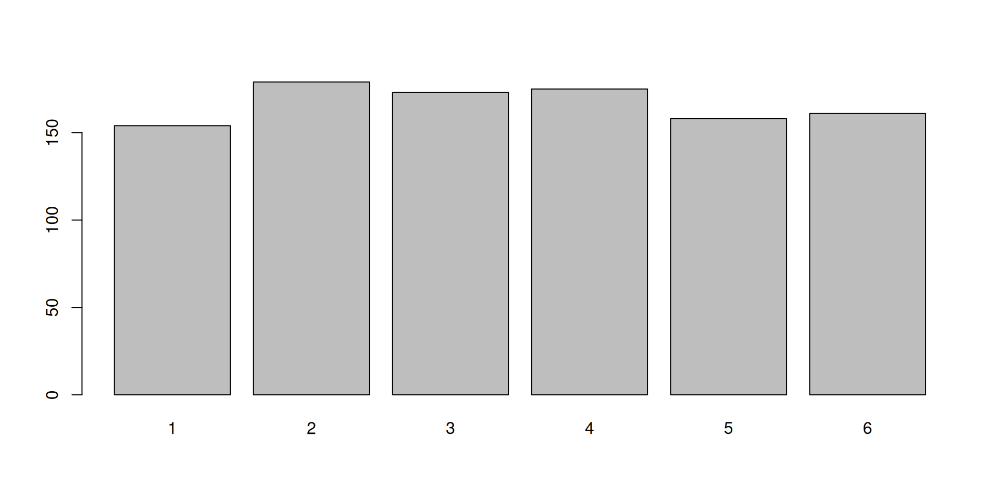
Your experiment
- N = 100000
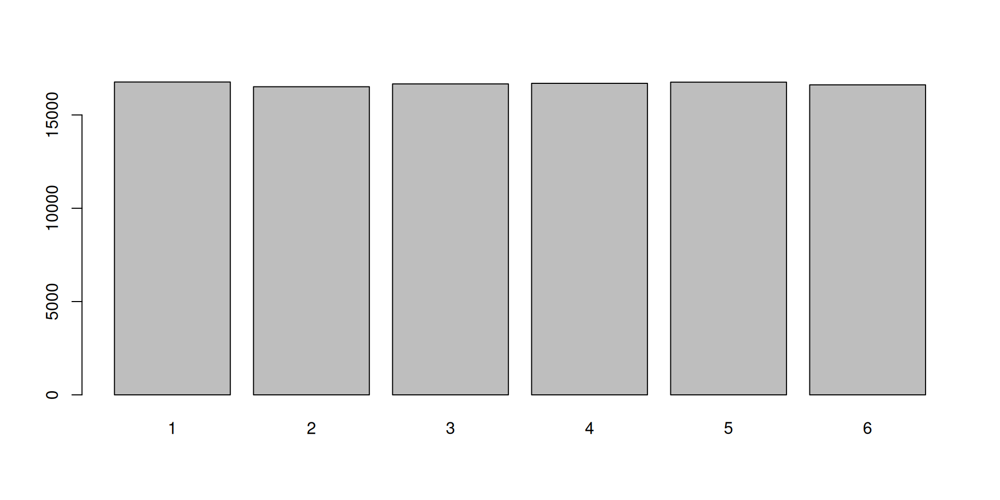
Your experiment
- Normalised
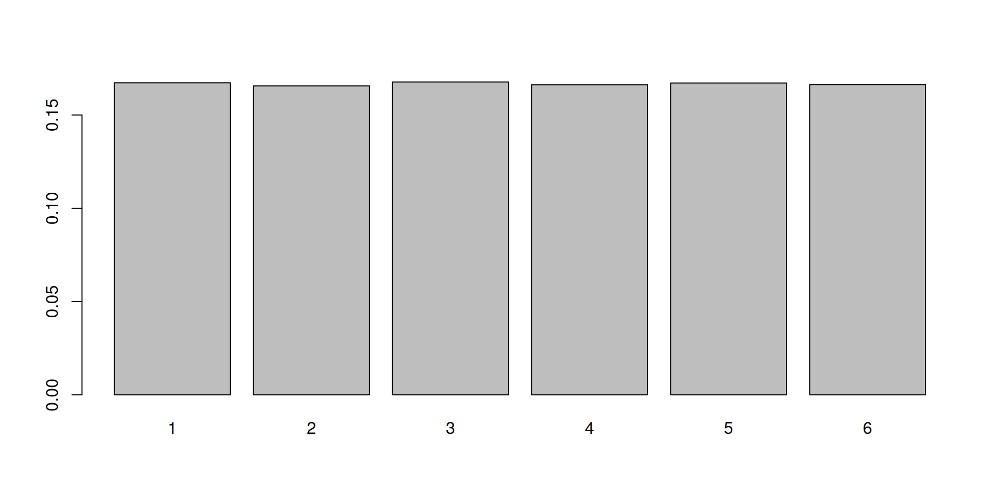
Law of large numbers
- When N gets very big, the frequency converges to the probability
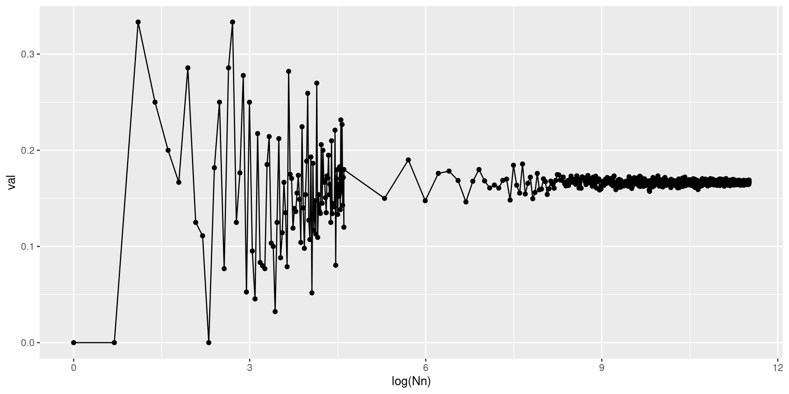
Summing probabilities
- The probability of obtaining a value \(\le\) 4 is the union of all the probabilities : \[\begin{equation} P(X=1) + P(X=2) + P(X=3) + P(X=4) = 4/6 \end{equation}\]
- It is written as a sum
Two dices example
- Now imagine that you have two dices
- \(X_1\) is the result of dice 1, \(X_2\) is the result of dice 2
- \(Y = X_1 + X_2\) is also a random variable;
- If \(X_1\) and \(X_2\) are independent and can be distinguished (e.g. different colors) \[\begin{equation} P(Y_{ij}) = P(X_1 = i)\times P(X_2 = j) \end{equation}\]
- \(S = \{2,3,4,5,6,7,8,9,10,11,12\}\)
- Yet here \(X_1\) and \(X_2\) are interchangeable… Probabilities = ?
Two dices example
\[\begin{array}{c|cccccc} & 1 & 2 & 3 & 4 & 5 & 6 \\ \hline 1 & \frac{1}{36} & \frac{1}{36} & \frac{1}{36} & \frac{1}{36} & \frac{1}{36} & \frac{1}{36} \\ 2 & \frac{1}{36} & \frac{1}{36} & \frac{1}{36} & \frac{1}{36} & \frac{1}{36} & \frac{1}{36} \\ 3 & \frac{1}{36} & \frac{1}{36} & \frac{1}{36} & \frac{1}{36} & \frac{1}{36} & \frac{1}{36} \\ 4 & \frac{1}{36} & \frac{1}{36} & \frac{1}{36} & \frac{1}{36} & \frac{1}{36} & \frac{1}{36} \\ 5 & \frac{1}{36} & \frac{1}{36} & \frac{1}{36} & \frac{1}{36} & \frac{1}{36} & \frac{1}{36} \\ 6 & \frac{1}{36} & \frac{1}{36} & \frac{1}{36} & \frac{1}{36} & \frac{1}{36} & \frac{1}{36} \end{array}\]Distribution
[1] 6 5 5 5 7 8[1] 7.0179[1] 2.436673 Min. 1st Qu. Median Mean 3rd Qu. Max.
2.000 5.000 7.000 7.018 9.000 12.000 Expectation and variance
- The expectation is the average value that will come out of your dice: \[\begin{equation} \text{E}(Y) = \sum_{i=1}^N Y_i * P(Y_i) = \bar{Y} \end{equation}\]
Expectation and variance
- And you want to measure the average dispersion around the mean called the variance : \[\begin{equation} \text{E}((Y_i-\bar{Y})^2) = \frac{1}{N} \sum_{i=1}^N (Y_i - \bar{Y})^2 = \sigma^2 \end{equation}\]
- This is a measure of “dispersion” (around the mean)
Visualising the variance
- For N = 100
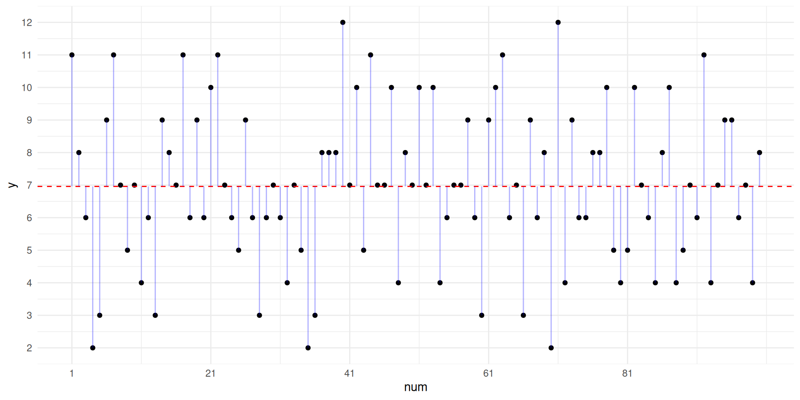
Conditional probability
- Now imagine that you know the value of one dice, but not the other.
- Imagine \(X_1 =4\).
- \(S_Y = \{5,6,7,8,9, 10\}\)
- What are the probabilities ? \[\begin{equation} P(Y|X_1 = 4) = \frac{1}{6} \end{equation}\]
- Hence, knowing \(X_1\) considerably influences the probabilities on Y!
Conditional expectation
- Knowing \(X_1 = 4\) therefore also changes the expectation : \[\begin{equation} \text{E}(Y|X_1 = 4) = \frac{1}{6}(5+6+7+8+9+10) = 7.5 \end{equation}\]
Conditional distribution
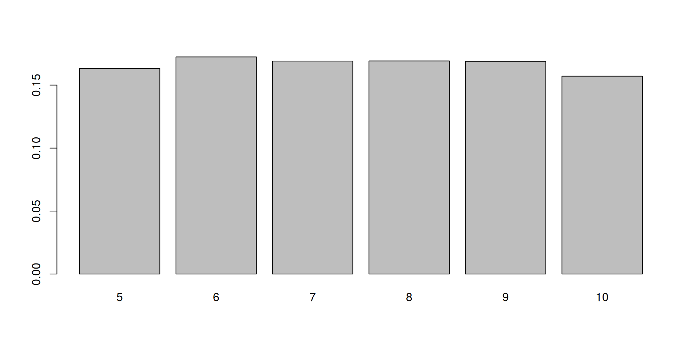
Towards continuity
- You have 1000 dices, with \(i = 1,2,3,..., 1000\) faces.
- Values are all divided by \(i\).
- You randomly pick 100 of these,
- You throw each of them 10000 times
- You report the sum as random variable Y
Your experiment
Probability density function (pdf)
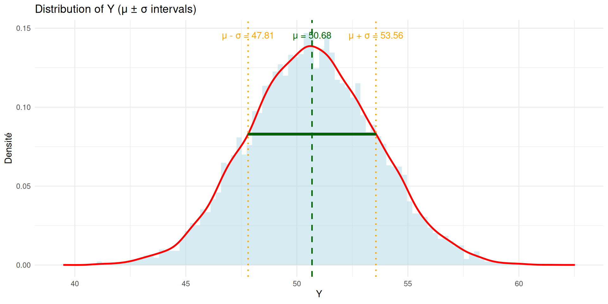
Probability density function (pdf)
- You now get closer to a continuous random variable…
- Your probability to obtain one specific value (eg. X = 52.503) becomes extremely small.
- Your density is a probability density function, \(f\)
- You generally rather assess the probability that the value you pick is bigger or smaller than a certain value
Probability density function (pdf)
- \(P(X \le 52.503) = \int_{\text{min(R)}}^{52.503} f_X(x') \text{d}x'\)
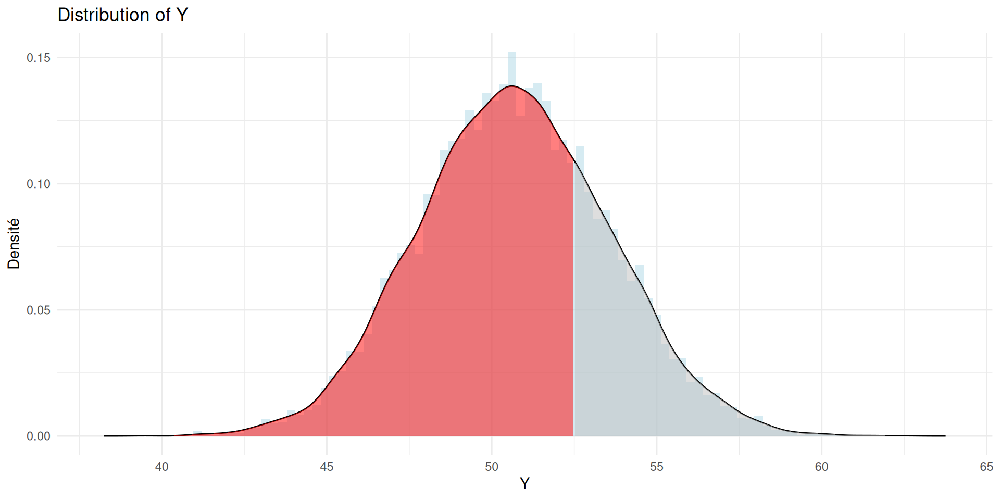
Probability density function (pdf)
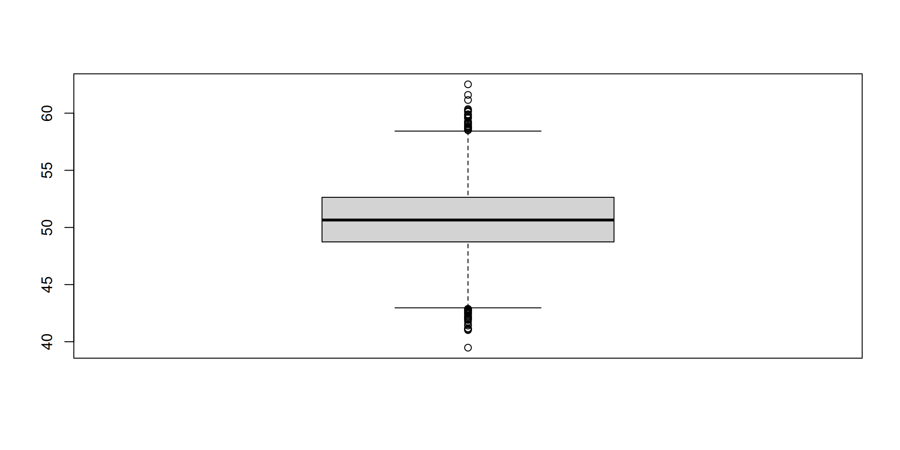
Many pdfs… depends on your data !

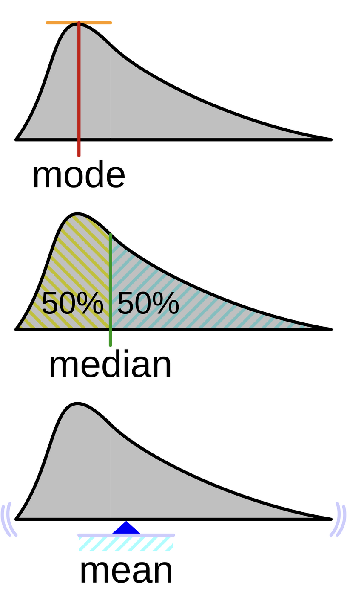
Coding reminder and real examples
Real-life examples
- Of course in practice dices are not extremely interesting…
- But the same logic applies to real data !
- Imagine working on the French communes
- You seek to describe the median income in those communes
- You only have access to a random sample of 10.000
- You will need a coding environment : RStudio (open source, free, huge community)
- and data… : your task is to find it online
Coding environment
- Language : R (CRAN)
- Environment : RStudio
- See documentation on:
- Malo Jan’s webpage https://malo-jn.quarto.pub/introduction-to-r/
- R documentation
Creating a project
- Create a project :

Creating a project
- Project/folder creation
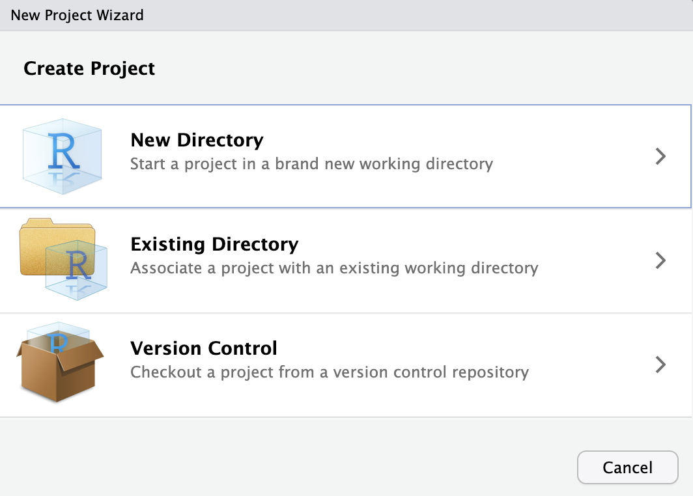
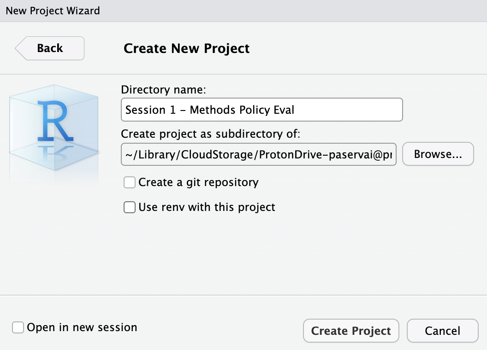
Data and packages
- R comes with basic language and functions : base R
- you can add, multiply, conduct basic operations in your files
- I strongly recommend the use of packages and libraries
tidyverseis extremely useful
- You can load and install such packages in this way :
Importing data
library(readxl) # needed to read excel without "rio"
communes <- read_excel("data/demographics2024.xlsx") # relative path
communes <- read_excel("/Users/Desktop/Website/methods_policyevaluation/slides/session1/data/") # absolute path
#using the "rio" package
library(rio)
communes <- import("data/demographics2024.xlsx")- Inspecting the data
# A tibble: 3 × 43
codecommune Year codedep agri indp cadr pint empl ouvr chom pact
<chr> <dbl> <chr> <dbl> <dbl> <dbl> <dbl> <dbl> <dbl> <dbl> <dbl>
1 01001 2024 01 0 39 33 14 86 147 26 319
2 01011 2024 01 11 0 2 78 17 3 9 111
3 01016 2024 01 0 41 40 40 41 13 0 175
# ℹ 32 more variables: age <dbl>, popf <dbl>, francais <dbl>, etranger <dbl>,
# prixbien <dbl>, capitalratio <dbl>, npropri <dbl>, nlogement <dbl>,
# pop <dbl>, revmoyfoy <dbl>, revtot <dbl>, recetteimpotslocaux <dbl>,
# recette <dbl>, baseimpotslocaux <dbl>, nodip <dbl>, sup <dbl>,
# Libellé <chr>, Exploitations <dbl>, Personnes <dbl>, UTA <dbl>, SAU <dbl>,
# PBS <lgl>, dens <chr>, densaav <chr>, dens7 <chr>, ntot <dbl>, pagri <dbl>,
# pindp <dbl>, pcadr <dbl>, ppint <dbl>, pempl <dbl>, pouvr <dbl>Absolute path
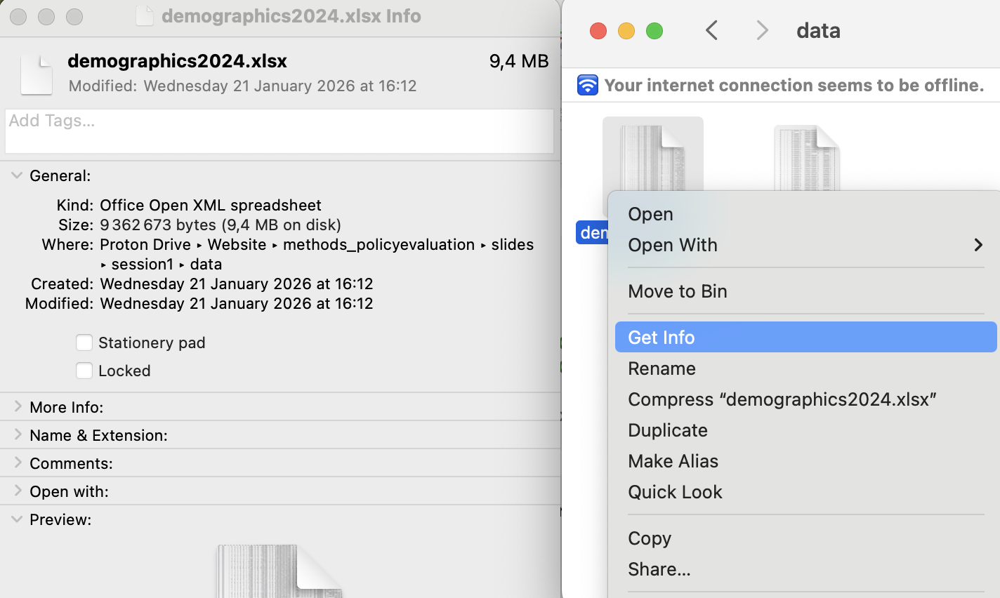
Categorical variable
- Density typology
[1] "Rural" "Urbain intermédiaire" "Urbain dense"
Rural Urbain dense Urbain intermédiaire
8781 194 1025 Length Class Mode
10000 character character - Nominal or ordinal ?
Interval variable
- Median income in communes
Min. 1st Qu. Median Mean 3rd Qu. Max. NA's
11357 25826 29547 31178 34505 128858 10 [1] 11356.6 128858.1 Min. 1st Qu. Median Mean 3rd Qu. Max.
11357 25826 29547 31178 34505 128858 Min. 1st Qu. Median Mean 3rd Qu. Max.
11357 25827 29554 31178 34496 128858 Interval variable
- Quantiles and Interval
Interval variable
- Boxplot
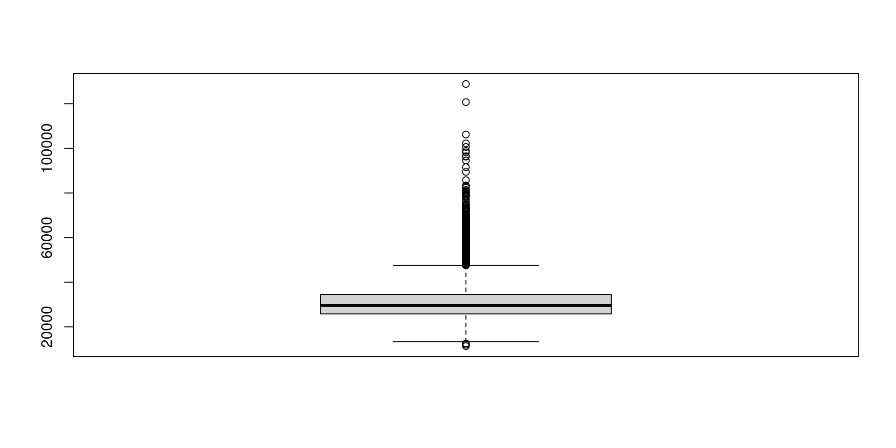
Density
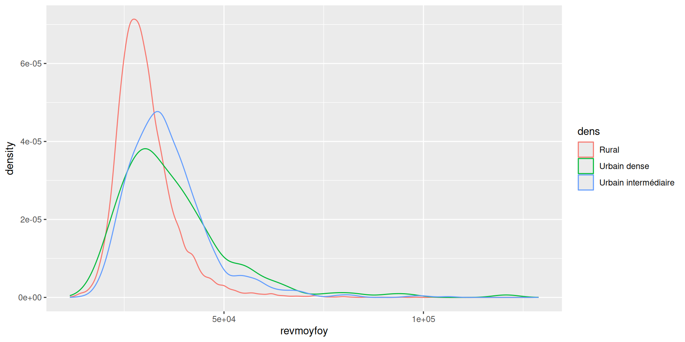
Skewness
- \(\text{Ages} =\{13,15,15,16,16,17,13,15,17, 18, 55\}\)
- \(\text{Med}_{\text{Age}} = 16\) and \(\bar{\text{Age}} = 19.09\)
- The mean is very sensitive to extreme values !
- Median \(<\) Mean : positively skewed (the mean is pushed upwards by high values)
- Median \(>\) Mean : negatively skewed (the mean is pushed downwards by low values)
- Mean = Median : symmetrical distribution
Skewness
- Logging a positively skewed variable can make it more symmetrical
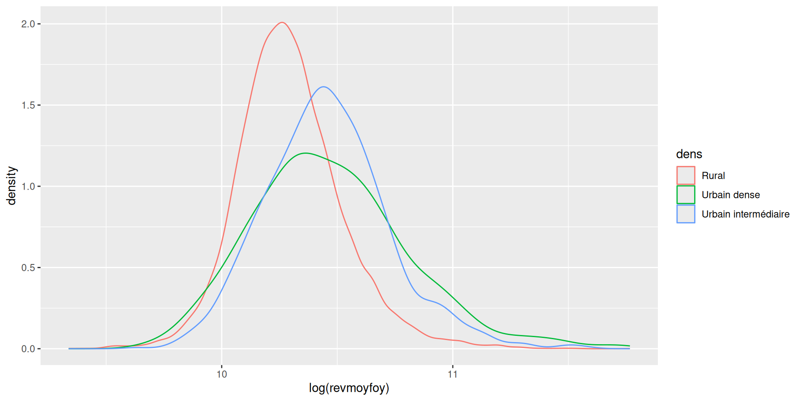
Expectations
- You can compute the expectation: \[\begin{equation} \text{E}(\text{MI}) = \frac{1}{10000}\sum_{i=1}^{10000} \text{MI}_i \end{equation}\]
- And the conditional expectations
Statistical inference
- You see :
\[\begin{equation} \text{E}(\text{MI}| \text{dens} = \text{Rural}) \le \text{E}(\text{MI}) \end{equation}\]
- Should we conclude that median income is significantly smaller in rural communes than in urban areas ?
- The density plot indeed shows that rural areas are more concentrated in the lower income regions, compared with urban areas…
- Yet dispersion quite large for urban areas… see notes
Exercices
- Manual warm-up
- Playing with R Studio
- Playing with ESS data
- Playing with socio-demographic and electoral data in France

Session 1 - Methods for Research and Policy Evaluation